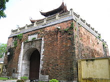
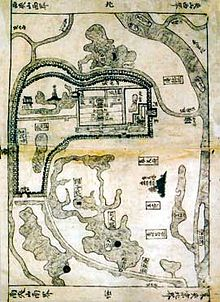
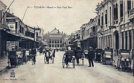
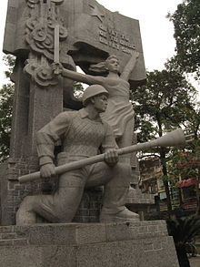

Tiền Thăng Long
Những di chỉ khảo cổ tại Cổ Loa cho thấy con người đã xuất hiện ở khu vực Hà Nội từ cách đây 2 vạn năm, giai đoạn của nền văn hóa Sơn Vi. Nhưng đến thời kỳ băng tan, biển tiến sâu vào đất liền, các cư dân của thời đại đồ đá mới bị đẩy lùi lên vùng núi. Phải tới khoảng 4 hoặc 5 ngàn năm trước Công Nguyên, con người mới quay lại sinh sống ở nơi đây. Các hiện vật khảo cổ giai đoạn tiếp theo, từ đầu thời đại đồ đồng đến đầu thời đại đồ sắt, minh chứng cho sự hiện diện của Hà Nội ở cả bốn thời đại văn hóa: Phùng Nguyên, Đồng Đậu, Gò Mun và Đông Sơn. Những cư dân Hà Nội thời kỳ đó sinh sống nhờ trồng trọt, chăn nuôi và chài lưới. Giai đoạn tiền sử này tương ứng với thời kỳ của các Vua Hùng trong truyền thuyết. Thế kỷ III trước Công Nguyên, trong cuộc chiến với quân Tần từ phương Bắc, Thục Phán quyết định đóng đô ở Cổ Loa, nay là huyện Đông Anh, cách trung tâm Hà Nội khoảng 15 km. Sự xuất hiện của thành Cổ Loa ghi dấu Hà Nội lần đầu tiên trở thành một đô thị trung tâm về chính trị và xã hội.
Thất bại của Thục Phán đầu thế kỷ II trước Công Nguyên đã kết thúc giai đoạn độc lập của Âu Lạc, bắt đầu giai đoạn một ngàn năm do các triều đại phong kiến Trung Hoa thống trị. Thời kỳ nhà Hán, Âu Lạc cũ được chia thành ba quận Giao Chỉ, Cửu Chân và Nhật Nam, Hà Nội khi đó thuộc quận Giao Chỉ. Vắng bóng trong sử sách suốt năm thế kỷ đầu, đến khoảng năm 454–456 thời Lưu Tống, Hà Nội mới được ghi lại là trung tâm của huyện Tống Bình. Năm 226 Nhà Hán khi cai trị Giao Châu đã đổi tên Tống Bình thành Long Uyên (hoặc Long Biên). Năm 544, Lý Bí nổi dậy chống lại nhà Lương, tự xưng hoàng đế, đặt quốc hiệu là Vạn Xuân, đóng đô ở Long Uyên. Người cháu của Lý Bí là Lý Phật Tử tới đóng đô ở Cổ Loa, nhưng nền độc lập này chỉ kéo dài tới năm 602. Thời kỳ Nhà Đường, An Nam được chia thành 12 châu với 50 huyện, Long Uyên lại được đổi thành Tống Bình, là trung tâm của An Nam đô hộ phủ. Năm 866, viên tướng nhà Đường Cao Biền xây dựng một thành trì mới, Tống Bình được đổi tên thành "Đại La" – thủ phủ của Tĩnh Hải quân. Theo truyền thuyết, khi đắp thành, Cao Biền thấy một vị thần hiện lên tự xưng là thần Long Đỗ. Vì vậy, sử sách còn gọi Thăng Long là đất "Long Đỗ". Thế kỷ X, sau chiến thắng của Ngô Quyền trước quân Nam Hán, Cổ Loa một lần nữa trở thành kinh đô của nước Việt.
Thăng Long, Đông Đô, Đông Quan, Đông Kinh
Sau khi lên ngôi năm 1009 tại Hoa Lư, năm 1010, Lý Thái Tổ quyết định dời đô về Đại La. Theo một truyền thuyết phổ biến, khi tới Đại La, Lý Thái Tổ nhìn thấy một con rồng bay lên, vì vậy đặt tên kinh thành mới là Thăng Long. Kinh thành Thăng Long khi đó giới hạn bởi ba con sông: sông Hồng ở phía Đông, sông Tô phía Bắc và sông Kim Ngưu phía Nam. Khu hoàng thành được xây dựng gần hồ Tây với cung điện hoàng gia cùng các công trình chính trị. Phần còn lại của đô thị là những khu dân cư, bao gồm các phường cả nông nghiệp, công nghiệp và thương nghiệp. Ngay trong thế kỷ X, nhiều công trình tôn giáo nhanh chóng được xây dựng, chùa Diên Hựu phía Tây hoàng thành xây năm 1049, chùa Báo Thiên xây năm 1057, Văn Miếu xây năm 1070, Quốc Tử Giám dựng năm 1076... Chỉ sau một thế kỷ, Thăng Long trở thành trung tâm văn hóa, chính trị và kinh tế của cả quốc gia.
Sau chiến thắng của khởi nghĩa Lam Sơn, Lê Lợi thành lập nhà Lê và Đông Đô cũng lấy lại vị thế kinh thành. Năm 1430, thành phố được đổi tên thành "Đông Kinh", đến 1466 được gọi là phủ Trung Đô. Hoàng thành Thăng Long dưới thời nhà Lê tiếp tục được mở rộng. Bên cạnh, khu vực dân cư được chia thành 2 huyện Vĩnh Xương và Quảng Đức, mỗi huyện 18 phường. Thời kỳ này, đứng đầu bộ máy hành chính là chức Phủ doãn. Thành phố tiếp tục một thời kỳ của những phường hội buôn bán, tuy bị hạn chế bởi tư tưởng ức thương của nhà Lê. Trong giai đoạn tranh giành quyền lực giữa nhà Lê, nhà Mạc và chúa Trịnh, Thăng Long vẫn duy trì vị trí kinh đô. Sự phức tạp của chính trị thời kỳ này cũng đem lại cho thành phố một điểm đặc biệt: Bên cạnh hoàng thành của vua Lê, phủ Chúa Trịnh được xây dựng và là trung tâm quyền lực thực sự. Nhờ nền kinh tế hàng hóa và sự phát triển của ngoại thương, đô thị Thăng Long bước vào thời kỳ phồn vinh, thu hút thêm nhiều cư dân tới sinh sống. Câu ca Thứ nhất Kinh kỳ, thứ nhì Phố Hiến nói lên sự sầm uất giàu có của thành phố, giai đoạn này còn có tên gọi khác là "Kẻ Chợ". Nhà truyền giáo người Pháp Alexandre de Rhodes ước tính dân số Thăng Long khi đó khoảng 1 triệu người. William Dampier, nhà phiêu lưu người Anh, đưa ra con số thường được xem hợp lý hơn, khoảng 2 vạn nóc nhà.
Mùa hè năm 1786, quân Tây Sơn tiến ra miền Bắc lật đổ chính quyền chúa Trịnh, chấm dứt hai thế kỷ chia cắt Đàng Trong – Đàng Ngoài. Sau khi Nguyễn Huệ cùng quân Tây Sơn quay về miền Nam, năm 1788, nhà Thanh đưa quân xâm lược Đại Việt. Tại Phú Xuân, Nguyễn Huệ lên ngôi ngày 22 tháng 12 năm 1788 rồi đưa quân ra Bắc. Sau chiến thắng ở trận Ngọc Hồi – Đống Đa, nhà Tây Sơn trị vì Đại Việt với kinh đô mới ở Phú Xuân. Hoàng đế Quang Trung đổi tên Thăng Long thành "Bắc Thành".
Thời nhà Nguyễn và Pháp thuộc
Năm 1858, Pháp bắt đầu nổ súng xâm chiếm Đông Dương. Sau khi chiếm ba tỉnh Đông Nam Kỳ, quân đội Pháp dưới sự chỉ đạo của Francis Garnier tiến đến Hà Nội đầu tháng 11 năm 1873. Mặc dù triều đình nhà Nguyễn chủ hòa, nhưng dân chúng Hà Nội vẫn tiếp tục chống lại người Pháp dưới sự chỉ huy của Nguyễn Tri Phương và Hoàng Diệu. Năm 1884, nhà Nguyễn ký hòa ước công nhận sự bảo hộ của Pháp trên toàn bộ lãnh thổ Việt Nam, Hà Nội cũng bước vào thời kỳ thuộc địa
Ngày 19 tháng 7 năm 1888, Tổng thống Pháp Sadi Carnot ký sắc lệnh thành lập thành phố Hà Nội. Thành phố Hà Nội lúc này có diện tích nhỏ bao gồm 2 huyện Thọ Xương và huyện Vĩnh Thuận thuộc phủ Hoài Đức. Phạm vi thành phố bó hẹp nằm trong khu vực thành Đại La mở rộng thời nhà Mạc. 3 phủ Hoài Đức, Thường Tín, Ứng Hòa thuộc về tỉnh Hà Đông. Phủ Lý Nhân tách ra tạo thành tỉnh Hà Nam. Một thời gian ngắn sau, khu vực phía Tây vườn bách thảo và khu vực tương ứng với các quận Đống Đa, Tây Hồ ngày nay được tách ra thành huyện Hoàn Long, trực thuộc tỉnh Hà Đông, đến khoảng năm 1940 thì sáp nhập trở lại.
Đến năm 1902, Hà Nội trở thành thủ đô của toàn Liên bang Đông Dương. Nhờ sự quy hoạch của người Pháp, thành phố dần có được bộ mặt mới. Lũy thành thời Nguyễn đã bị triệt hạ (đến năm 1897 hầu như bị phá hủy hoàn toàn), chỉ còn lại Cột Cờ, Cửa Bắc với vết đạn năm 1873, Đoan Môn và lan can rồng đá ở trong hoàng thành cũ. Năm 1901, các công trình phủ Thống sứ, Nhà bưu điện, Kho bạc, Nhà đốc lý, Nhà hát lớn, Cầu Long Biên, Ga Hà Nội, những quảng trường, bệnh viện... được xây dựng. Hà Nội cũng có thêm trường đua ngựa, các nhà thờ Cơ Đốc giáo, trường Đại học Y khoa, Đại học Đông dương, Đại học Mỹ thuật, các trường Cao đẳng Pháp lý, Nông lâm cùng những nhà máy sản xuất rượu bia, diêm, hàng dệt, điện, nước... Khi những nhà tư bản người Pháp tới Hà Nội ngày một nhiều hơn, các rạp chiếu phim, nhà hát, khách sạn... dần xuất hiện, những con phố cũng thay đổi để phù hợp với tầng lớp dân cư mới. Vào năm 1921, toàn thành phố có khoảng 4.000 dân châu Âu và 100.000 dân bản địa.
Trong hai cuộc chiến tranh
Giữa thế kỷ XX, Hà Nội chịu những biến cố phức tạp của lịch sử. Sự kiện Nhật Bản tấn công Đông Dương năm 1940 khiến Việt Nam phải nằm dưới sự cai trị của cả đế quốc Pháp và Nhật. Ngày 9 tháng 3 năm 1945, tại Hà Nội, quân đội Nhật đảo chính Pháp. Nhưng chỉ năm tháng sau, quốc gia này phải đầu hàng quân Đồng Minh, kết thúc cuộc Chiến tranh thế giới thứ hai. Vào thời điểm thuận lợi đó, lực lượng Việt Minh tổ chức cuộc Cách mạng tháng Tám thành công, lật đổ nhà nước Đế quốc Việt Nam, buộc vua Bảo Đại thoái vị, giành lấy quyền lực ở Việt Nam. Ngày 2 tháng 9 năm 1945, Hồ Chí Minh đọc tuyên ngôn độc lập tại quảng trường Ba Đình, khai sinh nước Việt Nam Dân chủ Cộng hòa với thủ đô Hà Nội. Sau độc lập, thành phố chia thành các khu phố, đổi tên nhiều vườn hoa, đường phố, như đại lộ (Avenue) Paul Doumer đổi tên là Nhân quyền, đường (Rue de la) République đổi tên là Dân Quyền, đại lộ Puginier đổi tên là Dân Chủ Cộng Hòa, đường Ollivier đổi là Hạnh Phúc, đường Dr Morel đổi là Tự Do...
Cuối năm 1945, quân đội Pháp quay lại Đông Dương. Sau những thương lượng không thành, Chiến tranh Đông Dương bùng nổ vào tháng 12 năm 1946 và thành phố Hà Nội nằm trong vùng kiểm soát của người Pháp. Sau khi Quốc gia Việt Nam được thành lập năm 1949, Hà Nội được Pháp chuyển giao cho Quốc gia Việt Nam quản lý. Quốc trưởng Quốc gia Việt Nam Bảo Đại bổ nhiệm dược sĩ Thẩm Hoàng Tín làm Thị trưởng thành phố. Năm 1954, chiến thắng Điện Biên Phủ giúp Việt Minh kiểm soát toàn bộ miền Bắc Việt Nam, Hà Nội tiếp tục giữ vị trí thủ đô của Việt Nam Dân chủ Cộng hòa. Ngày 30 tháng 9 năm 1954, Việt Nam Dân chủ Cộng hòa và Pháp ký Hiệp định chuyển giao Hà Nội về quân sự; ngày 2 tháng 10, ký Hiệp định chuyển giao Hà Nội về hành chính. Vào thời điểm được tiếp quản, thành phố gồm 4 quận nội thành với 34 khu phố, 37.000 dân và 4 quận ngoại thành với 45 xã, 16.000 dân. Cuối thập niên 1950 và đầu thập niên 1960, Hà Nội nhiều lần thay đổi về hành chính và địa giới. Năm 1958, bốn quận nội thành bị xóa bỏ và thay bằng 12 khu phố. Năm 1959, khu vực nội thành được chia lại thành 8 khu phố, Hà Nội cũng có thêm 4 huyện ngoại thành. Tháng 4 năm 1961, Quốc hội quyết định mở rộng địa giới Hà Nội, sáp nhập thêm một số xã của Hà Đông, Bắc Ninh, Vĩnh Phúc và Hưng Yên. Toàn thành phố có diện tích 584 km², dân số 91.000 người. Ngày 31 tháng 5 năm 1961, bốn khu phố nội thành Hoàn Kiếm, Hai Bà Trưng, Ba Đình, Đống Đa và 4 huyện ngoại thành Đông Anh, Gia Lâm, Thanh Trì, Từ Liêm được thành lập.